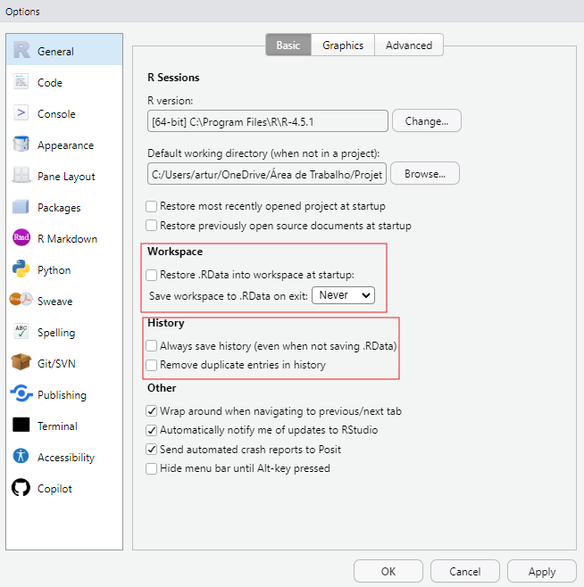

![]()
1 + 1[1] 2# Se você usar uma "#", o código fica comentado. Ou seja, é só um texto!
# 1 + 1 RO código é uma linguagem, então podemos documentar os passos da nossa análise. Isso é, escrever, linha à linha, os passos do processo de análise.
O código é texto, então podemos copiar e colar, facilitando enormemente a transposição do código para novos casos.
As linguagens de programação para ciência de dados mais utilizadas são de código aberto, em especial R, com dominância em certos nichos acadêmicos, e Pyhton, com popularidade ascentende e mais utilizado no universo corporativo.
R ao invés de Python.Alternativas proprietárias (fechadas, controladas por empresas que cobram por licenças ou assinatura) incluem softwares como Stata, SAS, SPSS, entre outras. Ou seja, mais custo para o negócio.
Free Software como em “liberdade” não como em “grátis”. Na prática temos acesso gratuito (na maioria dos casos). Os usuários podem modificar e aperfeiçoar o código-fonte.
As pessoas podem acessar as ferramentas, tendo as condições mínimas em termos de hardware e conhecimento, independente de poderem pagar uma licensa de uso.
Estudantes podem usar software semelhante ao de profissionais.
Você pode corrigir problemas e aprimorar a linguagem e eventualmente contribuir e modificar o projeto principal.
Você pode desenvolver suas próprias ferramentas.
Possibilita a existência de uma comunidade ativa.


É uma linguagem de programação que possui muitas ferramentas para análise de dados
É código aberto (open source)
Possui uma comunidade ativa de pessoas desenvolvedoras
É flexível, permite desenvolver funções e pacotes para facilitar o trabalho
Está disponível, gratuitamente, em diferentes plataformas: Windows, Linux e Mac
Mantido pela R Development Core Team
Vocês já tentaram repetir uma análise feita meses atrás e não lembraram como chegaram no resultado?
Já recebeu uma planilha e não entendeu como a pessoa chegou naqueles resultados, já que faltam passos claros de como executar a análise?
Você já ficou “irritado” de ter que fazer toda uma análise, que parece MUITO com alguma outra que você já fez mas que só mudou a variável de interesse?
Isso conecta com a experiência comum de quem lida com dados;
Reprodutibilidade é como pensar no seu eu do futuro e na sua equipe: todo mundo deve ser capaz de apertar Run e obter exatamente o mesmo resultado.
R?R não é só “programar”, mas se alinhar com boas práticas;R significa estar preparado para dialogar com transparência em todos os ambientes;A reprodutibilidade é um pilar ético e epistemológico da ciência, pois assegura que o conhecimento seja verificável e coletivo, não apenas dependente da autoridade de um pesquisador.
{ggplot2}
Quarto
R!objetos criados na sessão;O RStudio é um pai coruja 🦉. Isso significa que ele vai querer te lembrar de TODOS os comandos que você executou anteriormente. Isso é salvo em dois arquivos ocultos: .RData (guarda os objetos de uma sessão) e .Rhistory (abriga todos os comandos executados).
Qual o problema disso, então?
.RData pode fazer com que seu ambiente de trabalho fique muito pesado!RStudio, dependendo das configurações de seu computador.
:
Vá em Tools -> Global options... -> General
Pronto! Agora você vai garantir um ambiente de trabalho eficiente e reprodutível.
Se acostumar com sessões efêmeras não é uma tarefa fácil e um desconforto inicial é esperado. Pode ser que você ache entediante executar o mesmo código toda vez que abrir seu RStudio, mas é importante ter em mente que esse programa só está lá e pode ser executado inúmeras vezes porque o R não estará mais fazendo o seu trabalho. Zen do R, capítulo 2
1 Atenção: se você nunca usar, nem vai sentir falta!
R!RVamos para o quadrante do Editor/Script no RStudio. Se somarmos, por exemplo, 1 + 1, veremos que o R nos retorna [1] 2.
1 + 1[1] 2# Se você usar uma "#", o código fica comentado. Ou seja, é só um texto!
# 1 + 1 # antes do código, nós estamos comentando ele.
R como calculadoraTodas as operações possíveis!
# adição
1 + 1[1] 2# subtração
4 - 2[1] 2# multiplicação
2 * 3[1] 6# divisão
5 / 3[1] 1.666667# potência
4 ^ 2[1] 16# resto da divisão de 10 por 3
10 %% 3[1] 1# parte inteira da divisão de 10 por 3
10 %/% 3 [1] 3Assim como na matemática, a divisão e a multiplicação são calculadas antes da adição e da subtração! De qualquer forma, usar os parênteses nunca é demais.
50 + 1 * 8[1] 58É o mesmo que:
50 + (1 * 8)[1] 58E diferente de :
(50 + 1) * 8[1] 408No Script, ao final da linha de código, você pode executar CTRL + ENTER. Este é o atalho para rodar, avaliar ou executar o seu código! Você vera a resposta diretamente no Console.
Grosso modo, objetos são nomes que guardam informações. Tabelas, números, funções etc. Para criar um objeto, basta usar os operadores <- ou =.
x <- 1 # Leia-se: atribuo o valor 1 ao objeto x
y = 2 # Leia-se: atribuo o valor 2 ao objeto y
X <- 2 Na comunidade R, a convenção é usarmos o sinal <- ao invés do sinal de =. Na maioria dos casos, se você usar <- ou =, vai obter o mesmo resultado. Entretanto, o sinal de igualdade é reservado para funções dentro do R. O atalho para o sinal de atribuição <- é ALT -.
R é sensível 😭😱O R diferencia letras maiúsculas e minúsculas. Tecnicamente, dizemos que o R é case sensitive.
x [1] 1# é diferente de
X[1] 2meu_objeto <- c(1:10)
Meu_objeto <- c(11:20)meu_objeto [1] 1 2 3 4 5 6 7 8 9 10Meu_objeto [1] 11 12 13 14 15 16 17 18 19 20mean(), sum(), sd()ação <- 1R irá sobrescreverbancodedados <- 1 # Ruim
banco_de_dados <- 1 # Bomi. Ou seja, substituimos os ` ` por `_`Os objetos no R podem comportar muitas informações de uma só vez. A mais frequente que nós utilizamos são os vetores. Eles são um conjunto de informações atribuídas em uma única linha. Os vetores podem ser:
vetor_1 <- 1:10 # Vetor que vai de 1 até 10
vetor_2 <- c(0.1, -5.0, 3.13, 100.1) character):vetor_4 <- "Olá Mundo"
vetor_5 <- c("Conjunto", "de", "texto", "em", "um", "vetor")É possível verificar a classe dos vetores:
class(vetor_1) # integer (numero inteiro)[1] "integer"class(vetor_2) # numeric (apresenta número decimal)[1] "numeric"class(vetor_5) # character (texto)[1] "character"RNo slide anterior, vimos uma coisa estranha que ainda não apresentamos. O que é o c()?
vetor_5 <- c("Conjunto", "de", "texto", "em", "um", "vetor")Para pedir ajuda ao R, basta ir no Console e digitar:
?c?mean# Criar o objeto
meu_objeto <- c(0:50, 60, 70, 80, 90)
meu_objeto [1] 0 1 2 3 4 5 6 7 8 9 10 11 12 13 14 15 16 17 18 19 20 21 22 23 24
[26] 25 26 27 28 29 30 31 32 33 34 35 36 37 38 39 40 41 42 43 44 45 46 47 48 49
[51] 50 60 70 80 90# "Acessar" o valor de determinado elemento do vetor
meu_objeto[1] # acessa o 1o elemento do vetor 'meu_objeto'[1] 0meu_objeto[55] # acessa 55o elemento do vetor 'meu_objeto'[1] 90# Por meio dessa selecao de valores, podemos fazer operacoes:
meu_objeto[1] + meu_objeto[10] + meu_objeto[55] [1] 99meu_objeto[1] + meu_objeto[10] * meu_objeto[55][1] 810meu_objeto[1] - meu_objeto[10] [1] -9meu_objeto[10] ^ meu_objeto[3][1] 81# Calcular algumas estatisticas descritivas:
mean(meu_objeto) # media[1] 28.63636max(meu_objeto) # maximo[1] 90min(meu_objeto) # minimo[1] 0# Guardar essas informacoes em objetos
media <- mean(meu_objeto)
maximo <- max(meu_objeto)
minimo <- min(meu_objeto)
# Unir em um vetor
## c significa concatenar
descritivas <- c(media, maximo, minimo)
descritivas[1] 28.63636 90.00000 0.00000| Operador | Operação |
|---|---|
! |
Negação (não) |
& |
E (avalia elemento a elemento) |
| |
Ou (avalia elemento a elemento) |
< |
Menor |
<= |
Menor ou igual |
> |
Maior |
>= |
Maior ou igual |
!= |
Diferente |
&& |
E (avalia apenas o 1º elemento) |
|| |
Ou (avalia apenas o 1º elemento) |
Alguns conceitos são importantes para se trabalhar no R. Um deles é a ideia de diretórios de trabalhos (working directory) e projetos.
Para isso, usamos o conceito de caminhos.
Caminhos podem ser:
dados <- readxl::read_xlsx("C:/Users/artur/OneDrive/Área de Trabalho/Projetos/cursos-oferecidos/curso-programacao-para-humanidades/dados/dados_bbrutos.xlsx")Ou seja, o caminho completo desde a raiz do seu computador até o arquivo desejado.
dados <- readxl::read_xlsx("dados/dados_brutos.xlsx")Ou um caminho relativo à uma pasta de referência.
Usar caminhos relativos, ao invés de caminhos absolutos, garante que o código funcione em qualquer computador!
Um diretório de trabalho no R é o diretório (ou pasta) para onde o R se baseia quando precisamos interagir com os nossos arquivos.
getwd()getwd()[1] "D:/OneDrive/Área de Trabalho/Projetos/cursos-oferecidos/2026-02-summer-intro-crime-analysis-R/chapters".RProjA melhor forma de organizar os seus arquivos dentro do R é usando Projetos.
projeto no RStudio, ele cria uma pasta para nós e define essa pasta como diretório de trabalho (lembra do caminho relativo?).
.RProj dentro da pasta.projetos facilita a organização de arquivos e a reprodução do código.File > New Project...